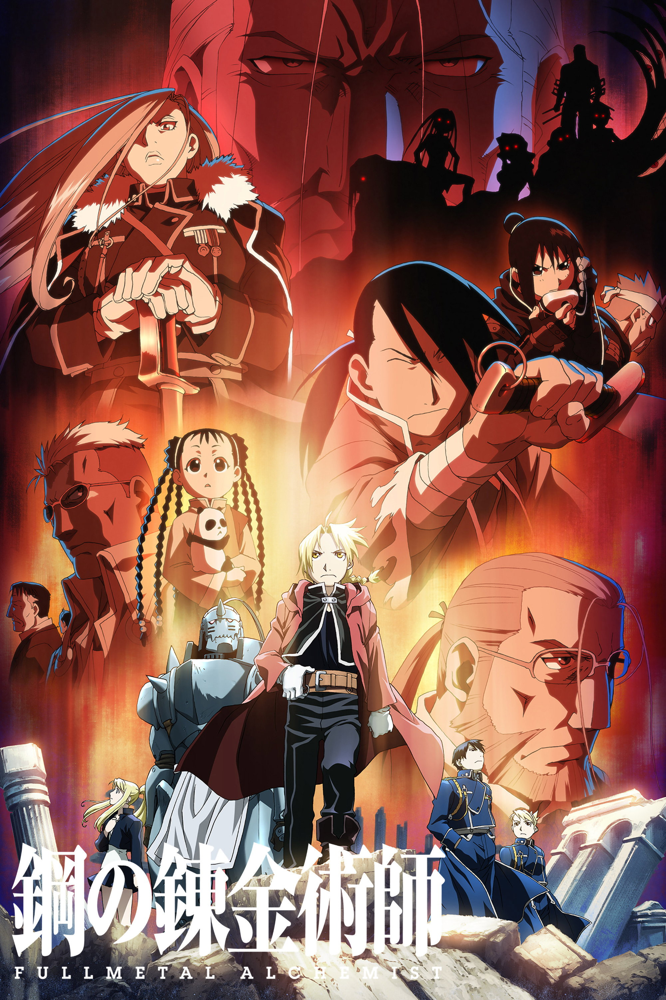

故事，从这里开始
爱德华和阿尔冯斯兄弟因炼金术实验付出沉重代价。为了找回原本的身体，他们加入军队体系并追查贤者之石的线索。
为什么推荐
它同时有冒险、战斗和完整的世界设定。故事不断追问代价、责任和人与人之间的承诺，适合想进入一部长篇主线作品时选择。
适合怎样的你
喜欢明确目标、兄弟关系和大型冒险世界观的观众。
观看前，知道这些
涉及战争、死亡、人体实验和政治冲突，情绪强度较高。
STORY 07 / 奇幻冒险
鋼の錬金術師 FULLMETAL ALCHEMIST
为了找回失去的东西，两兄弟踏上等价交换的旅途。
想被鼓励、想看热血
A STORY FOR TONIGHT爱德华和阿尔冯斯兄弟因炼金术实验付出沉重代价。为了找回原本的身体，他们加入军队体系并追查贤者之石的线索。
它同时有冒险、战斗和完整的世界设定。故事不断追问代价、责任和人与人之间的承诺，适合想进入一部长篇主线作品时选择。
喜欢明确目标、兄弟关系和大型冒险世界观的观众。
涉及战争、死亡、人体实验和政治冲突，情绪强度较高。